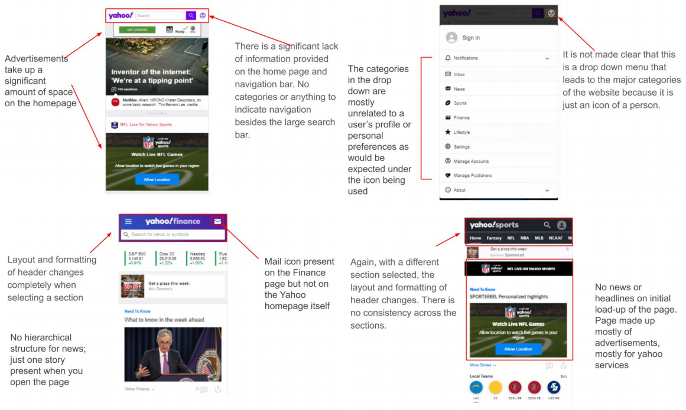

The following is the final project for my class COGS 187A (Information Architecture) in which I worked with three other teammates to redesign the usability and navigation of an existing website. A more comprehensive PDF report of this project can be found here.
Motivation
A decade ago, it seemed as though the two most popular search browsers were Yahoo
and Google, but eventually Google came out on top . It is clear to see why this happened, if one were to look at Yahoo’s site. From our first hand experience, we consider Yahoo’s mobile site even worse than the desktop site, particularly because of poor navigation. For
reasons that will be discussed in detail later on, we have decided to redesign Yahoo.com
for mobile.
Our Process
Research - Design - Test
Research
User Testing Round 1
To begin, we conducted preliminary user interviews and site testing on four frequent internet users to get an understanding of current pain points in Yahoo's mobile site.These users include a high school student, college students, and a recent college graduate who all have expressed some experience with using Yahoo.com in the past but has long switched to using Google.
Our interview plan consisted of getting to know the user's backgrounds in order formulate possible personas for a typical user. These questions focused on knowing more about each user's occupation, internet habits, and if biases existed. Following this initial interview, each user were to perform four distinct tasks on Yahoo's mobile site. For instance, users were asked to check the local weather in San Diego. These tasks were determined beforehand to emphasize different features of the site that potentially hindered usability. For each task, a series of questions were also drafted to be ask during the testing session that would allow the user to "think aloud" and to allow us to get a better understanding into their thought process.
Usability Issues
After analysis of all the user’s top usability errors, we came to the conclusion that:
1. The site lacked a standard menu navigation that was clear and intuitive to process.
2. The site had inconsistent headers that varied through different pages of the site
The biggest issue with this website was the usability of navigation and layout in which
the most important information was presented. With its current design, it is unclear how
to navigate through pages without using the search bar. Sections like sports, Weather,
and Finance are hidden initially and are placed in a location in which is unexpected.
Additionally, navigation and layout when selecting one of those sections is completely
different which only leads to more navigation issues.

Competitive Analysis
We then proceeded to do competitive analysis on mobile websites similar to Yahoo.com. These sites were the mobile versions of MSN.com, The New York Times, and Bing. We learned that all three of these websites had considerably better information architecture and navigation than Yahoo.com. For instance, both MSN and the NYT featured a consistent top bar across all their pages as well as a clear and concise expanded menus for users to navigate the site.
Design
Wireframe Sketches
With the top usability errors chosen and inspired from our competitive analysis, we each decided to sketch our own redesign for Yahoo to generate as many possible ideas as we could.
Prototypes
After sketching, we discussed our sketches and decided that sketches 2 and 4 were the most feasible. We then proceeded to create high-fidelity prototypes of them.
Redesign 1
Redesign 1 focused on the ease of
accessibility straight from the landing page of the website. Side menus for primary site navigation and for user profile features can be
accessed consistently throughout the site. The search function is streamlined and stays true to the original.
Redesign 2
This redesign primarily focused on better navigation transparency and
improving the search bar. Like redesign 1, the home page has the same fixed header. The articles on
the landing page are presented in a more organized way.A fixed menu icon on all pages allows the user to easily navigate
throughout the site. A fixed profile icon allows easy access to email and notifications. And users can easily search through Yahoo’s site by selecting from a list of tags. Users can also choose to filter search results through the same interface.
Test
User Testing Round 2
For our second rounding of user testing, we decided to directly compare our two
prototypes and have each of the users not only interact with both of them, but also vote
on the preferred one. They however, will not be simply choosing one over the other; we
created a list of five questions that directly compared features of both, and had each
user vote on a prototype per question. After testing all users, we totalled up the votes for
each prototype and the one with the most votes was the redesign we decided to go
with.
We conducted this round of user testing similarly to how we conducted the first round,
which can be viewed above. For each user, we randomized the order in which we
presented the prototypes to minimize biases that could result.
After the testing, we showed them the original site and asked for their honest opinion on
which they liked better, the redesigns or the original.
Results
Tallying up the points from the five questions for all four users, both designs actually had
the same amount of points. We decided to not proceed with a tiebreaker and focused
on the bigger point. All users said that they much preferred the redesigns over the
original site.
Lessons Learned
Despite some unpredicted weaknesses that we encountered, we think that the overall
benefits from our redesigns outweigh the weaknesses we had and still would want to
push forward our redesigns. We believe our rationales for the redesign still hold,
especially with the features that the users enjoyed. For features that had some issues
such as Redesign 2’s filter system, we believe that through iteration, those can be
improved to meet the functioning standards that we initially wanted.
From this project, we learned that user testing and feedback is crucial for any redesign,
and that we should always focus on what the user wants, not what we think the user
wants. We also learned that coming up with a redesign is a doable task, but coming up
with multiple redesigns is a bit harder. It was also helpful and educational to critique,
compare, and contrast our chosen website with the site of competitors to see how each
worked (or did not work) for its own design space and intended audiences.
If you would like to learn more about this project and our process, please visit the more comprehensive PDF report of it found here
Thank you for making it to the end!
Want to learn more about our Yahoo Mobile Redesign? We can chat about it!